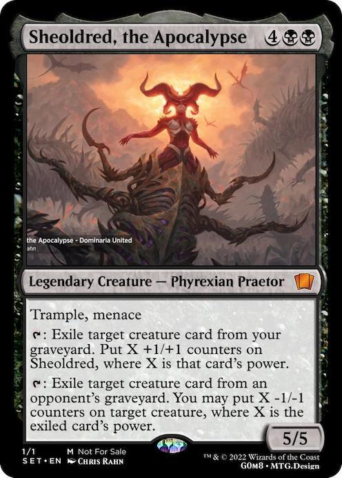

Decks de Magic arena

deck é composto pelas cartas:
Comandante

1 Sheoldred, o Apocalipse (DMU) 107
Deck
1 Empurrão Fatal (KLR) 84
1 Castelo de Locthwain (ELD) 241
1 Colmeia do Olho Tirano (AFR) 258
36 Pântano Nevado (KHM) 280
1 Takenuma, Charco Abandonado (NEO) 278
1 Renascimento de Malakir (ZNR) 111
1 Campo da Ruína (MID) 262
1 Agarrar-se ao Pó (THB) 87
1 Ritual Sombrio (STA) 26
1 Coagir (M19) 94
1 Inquisição de Kozilek (STA) 31
1 Capturar Pensamento (AKR) 127
1 Sede de Grão-vampiro (ZNR) 94
1 Garras Infernais (MID) 107
1 Preço da Fama (GRN) 83
1 Vínculo Doloroso (Y22) 12
1 Assinar com Sangue (STA) 32
1 Contatos no Mercado Negro (HBG) 145
1 Elidir (DMU) 89
1 O Pesadelo de Elspeth (THB) 91
1 Tutor Sinistro (M21) 103
1 Liliana do Véu (DMU) 97
1 Ginete Homicida (ELD) 97
1 Arena Phyrexiana (8ED) 152
1 Invocar o Desespero (NEO) 101
1 A Crueldade de Gix (DMU) 87
1 Sangue na Neve (KHM) 79
1 Fortaleza da Cabala (DAR) 238
1 Perscrutar o Abismo (M21) 117
1 Sinete Arcano (ELD) 331
1 Coração de Aço Gélido (CSP) 136
1 Jejum de Sangue de Arguel (XLN) 90
1 Tomo da Mente Labiríntica (M21) 232
1 Pedra da Mente (WTH) 153
1 Quebrabanco Justiceiro (NEO) 255
1 Chave do Arquivo (Y22) 59
1 O Sol Imortal (RIX) 180
1 Ato Cruel (IKO) 91
1 Alimentar o Enxame (ZNR) 102
1 Pacto Místico (HBG) 153
1 Karn, o Grande Criador (WAR) 1
1 Talismã de Garra dos Desejos (ELD) 110
1 Estilhaçamento d'Alma (ZNR) 127
1 A-Elixir do Cosmos (KHM) 237
1 Extrair a Verdade (SNC) 78
1 Saqueamento do Submundo (Y22) 15
1 Surra de Hagra (ZNR) 106
1 Bússola Taumática (XLN) 249
1 Mapa do Tesouro (XLN) 250
1 Veredito das Sombras (ZNR) 124
1 Barganha Demoníaca (VOW) 103
1 Simulacro Solene (M21) 239
1 Ídolo Guardião (JMP) 467
1 Ornitóptero do Paraíso (MH2) 232
1 Lótus Engalanada (DAR) 215
1 Marcha da Tristeza Miserável (NEO) 111
1 Distorção do Pensamento (M20) 117
1 Gonti, Senhor da Opulência (JMP) 240
1 Sorin, o Infeliz (VOW) 131
1 Lolth, Rainha Aranha (AFR) 112
1 A Ancianomancia (WAR) 89
1 O Ancião Renascido (DAR) 90
1 Torre do Relicário (M19) 254
1 Maestria do Lich (DAR) 98